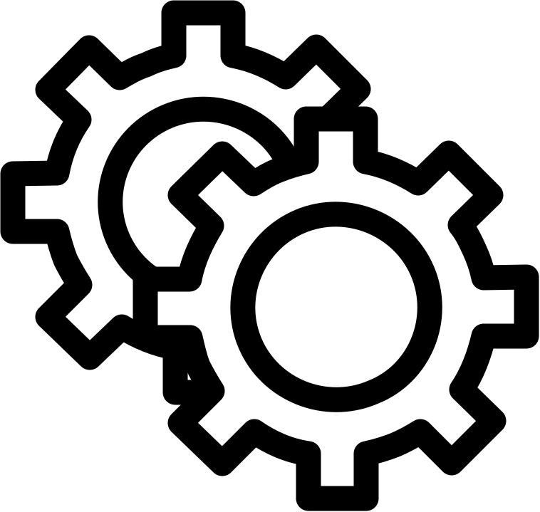

This is a BPMN-style editor for a Sborex system entity. Click an element to see the options for drawing and editing the diagram; then you may select the gears  to see the element's attributes. Press Views, Beans or Resources buttons to see the diagram entity level attributes. BPMN diagram button downloads a definition XML file; SVG image button generates a vector image. See the small Sborex tutorial for details. The vertical workflow style is another way of designing the same entity.